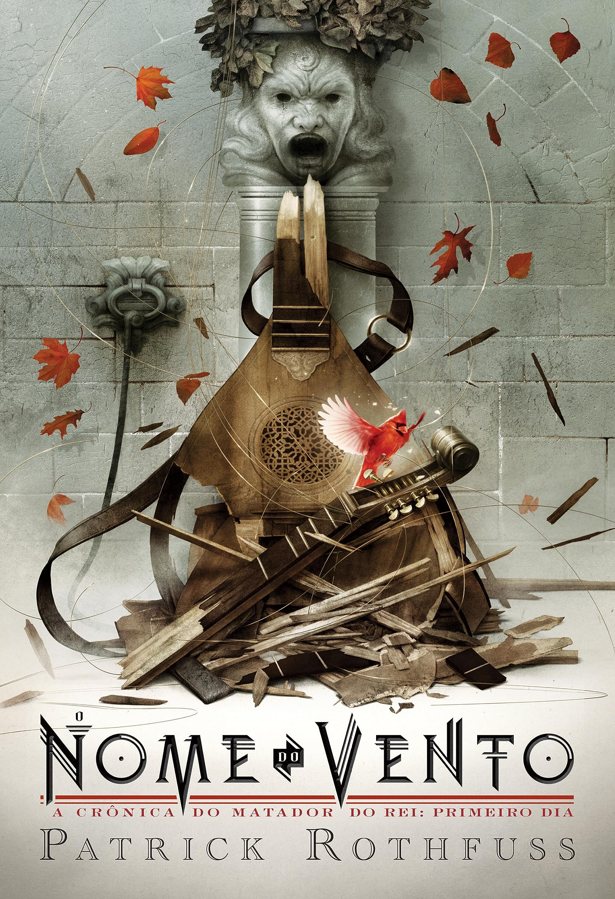
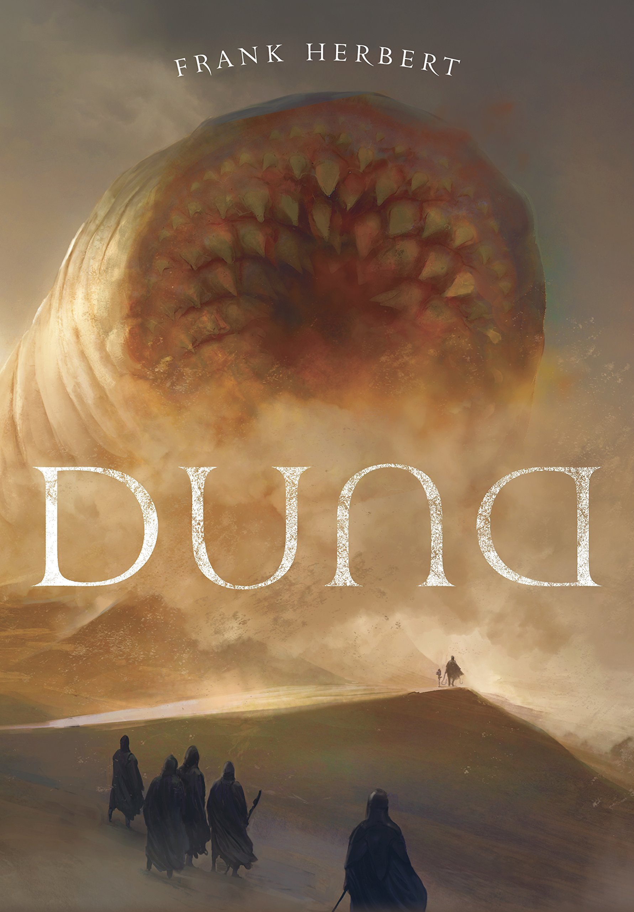
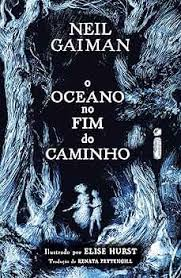
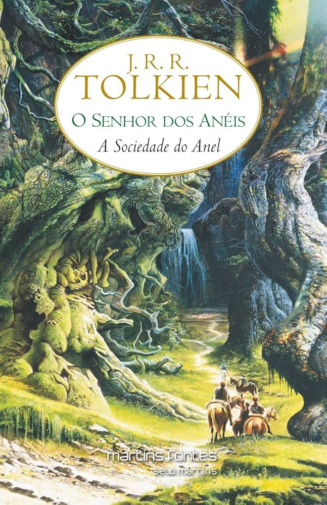
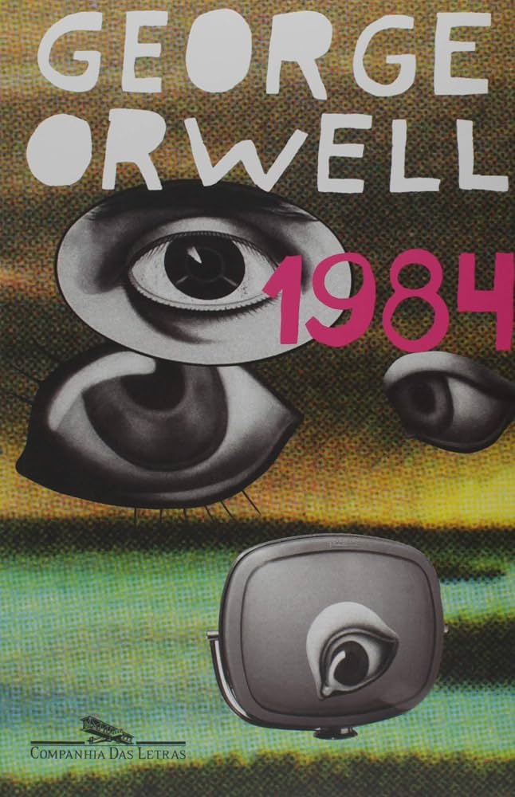
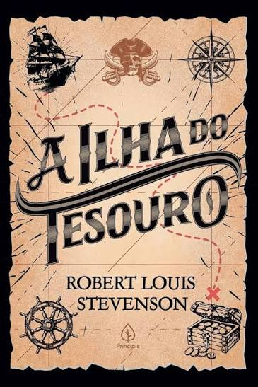

O Nome do Vento

Autor: Patrick Rothfuss
A história de Kvothe, um homem que narra sua trajetória repleta de magia, música e mistérios.
Explore novos livros, conheça diferentes histórias e encontre sua próxima aventura.
Conheça algumas obras para adicionar à sua lista de leitura.

Autor: Patrick Rothfuss
A história de Kvothe, um homem que narra sua trajetória repleta de magia, música e mistérios.

Autor: Frank Herbert
Em um planeta desértico, uma família se envolve em uma disputa pelo controle de um recurso precioso.

Autor: Neil Gaiman
Uma história fantástica sobre memória, infância e acontecimentos misteriosos.
Algumas obras bastante conhecidas entre os leitores.

Autor: J. R. R. Tolkien
Uma jornada épica pela Terra-média para destruir o Um Anel.

Autor: George Orwell
Um romance sobre vigilância, manipulação e controle social.

Autor: Antoine de Saint-Exupéry
Uma história sobre amizade, imaginação e descobertas.
Escolha um gênero e encontre histórias diferentes.
O Hobbit — J. R. R. Tolkien

Duna — Frank Herbert
Orgulho e Preconceito — Jane Austen
Assassinato no Expresso do Oriente — Agatha Christie
A Ilha do Tesouro — Robert Louis Stevenson
